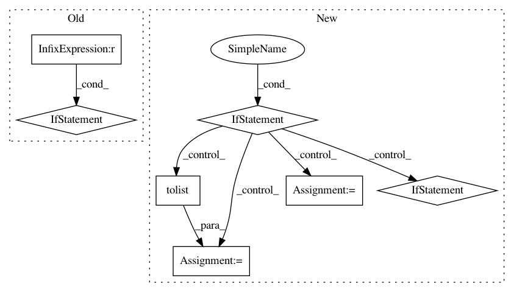

edd86f6318b411a42a1f287fa6359bbfd12fa71c,python/src/nnabla/functions.py,,scatter_nd,#Any#Any#Any#Any#,915
Before Change
if ref is not None:
if not isinstance(ref, nn.NdArray):
raise TypeError("reference data must be NdArray type")
if not ref.shape == shape:
raise ValueError("reference data must have shape {}".format(shape))
return scatter_nd_base(data, indices, shape, outputs=[ref])
After Change
indices = nn.Variable.from_numpy_array(indices)
if shape is None and out is None:
raise TypeError("One of `shape` or `out` argument must be supplied.")
if shape and out:
raise TypeError("Only one of `shape` or `out` argument may be used.")
if out:
if isinstance(out, nn.Variable):
out = out.data
if not isinstance(out, nn.NdArray):
raise TypeError("`out` argument must be NdArray or Variable type.")
shape = out.shape
outputs = [out]
else:
if isinstance(shape, np.ndarray):
shape = shape.tolist()
outputs = None
return scatter_nd_base(data, indices, shape, outputs=outputs)
In pattern: SUPERPATTERN
Frequency: 3
Non-data size: 7
Instances
Project Name: sony/nnabla
Commit Name: edd86f6318b411a42a1f287fa6359bbfd12fa71c
Time: 2019-06-24
Author: stephen.tiedemann@sony.com
File Name: python/src/nnabla/functions.py
Class Name:
Method Name: scatter_nd
Project Name: danforthcenter/plantcv
Commit Name: 96c26bd09d02bb9cddbc083c75ba2ea65b5d377a
Time: 2020-07-16
Author: noahfahlgren@gmail.com
File Name: plantcv/plantcv/color_palette.py
Class Name:
Method Name: color_palette
Project Name: Epistimio/orion
Commit Name: 9d941d30962c211971ec316bf40c2ebfbf28a567
Time: 2021-02-24
Author: xavier.bouthillier@umontreal.ca
File Name: src/orion/analysis/lpi_utils.py
Class Name:
Method Name: lpi